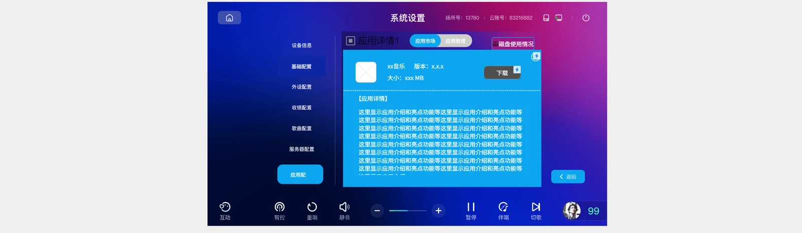
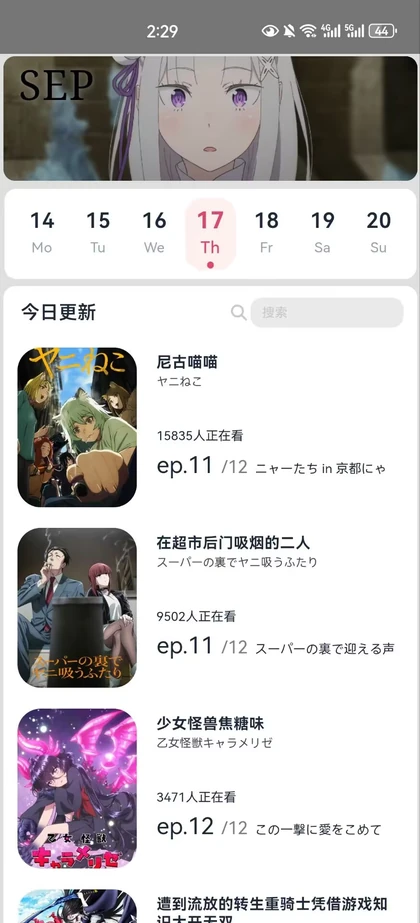

VOD 应用配置：应用市场与应用管理需求设计
客户提出希望 VOD 能提供更多应用服务。我将这一需求整理为可直接开发的需求说明书， 覆盖应用市场、应用管理、磁盘使用三条流程，并逐条定义了下载暂停、卸载确认、 空间不足冷却锁等容易被忽略的分支。
需求说明书 V1.0 + 墨刀高保真原型
查看详情 →
我来自重庆邮电大学，求职方向是产品经理 / AI 产品经理。下面四个项目来自不同的场景： 一份给硬件产品写的需求说明书、一次用公开数据验证功能假设的尝试、 一份竞品分析，还有一个我自己从需求做到打包的 Android 应用。

客户提出希望 VOD 能提供更多应用服务。我将这一需求整理为可直接开发的需求说明书， 覆盖应用市场、应用管理、磁盘使用三条流程，并逐条定义了下载暂停、卸载确认、 空间不足冷却锁等容易被忽略的分支。

独立完成的 Android 应用。界面基于移动端 H5 实现，通过 Capacitor 打包为 APK， 番剧数据来自 Bangumi 官方接口。为保障设备在没有本地服务、网络条件不佳时仍可正常使用， 设计了本地服务、直连接口、离线快照三层数据回退。
「稍后再看」的典型问题是收藏量高、实际打开率低。我基于 Kaggle 的 YouTube 热门视频数据 （40,949 条）完成三段分析，发现视频存在「黄金消费期」：发布超过 30 天后， 平均观看量降至整体的 1/46。据此提出三个优化方向。
两个平台均从弹幕视频社区起步，十年后差距显著。我从产品定位、核心用户、内容供给、 商业化四个维度进行对比，并梳理出三次关键体验断层：注册门槛、观看体验、 创作者工具。最终形成一份可用于事前判断的清单。
我在进行产品判断时会先回答三个问题：用户认可的核心价值是否依然成立？基础体验是否守住了？ 商业收入能否持续支撑体验优化？第一问对应价值，第二问对应体验，第三问决定产品能否长期存续。
实习期间最大的收获，是理解了需求文档的价值体现在开发读完能否直接开工。 「下载时可以点击进度条暂停」这类描述较为基础，而「空间不足的提示显示 3 秒后自动消失， 期间重复点击仅重置倒计时、不重新检测」才是开发真正需要的内容。
独立完成开发之后，我进一步意识到需求描述中的一处含糊，往往意味着开发和测试多一轮返工。 我在 AnimeDate 开发过程中遇到的多类此类问题，都记录在了项目详情中。
承接客户提出的应用服务扩充需求，输出需求说明书 V1.0 及配套墨刀高保真原型。
独立完成需求、交互、界面与 Android 打包，交付可安装的 APK 及本地数据服务。
使用 SQL 分析公开数据集，为「稍后再看」提出优化方案；系统梳理 AcFun 与 Bilibili 的产品路径差异。